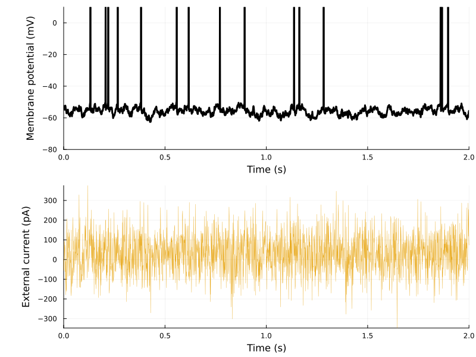
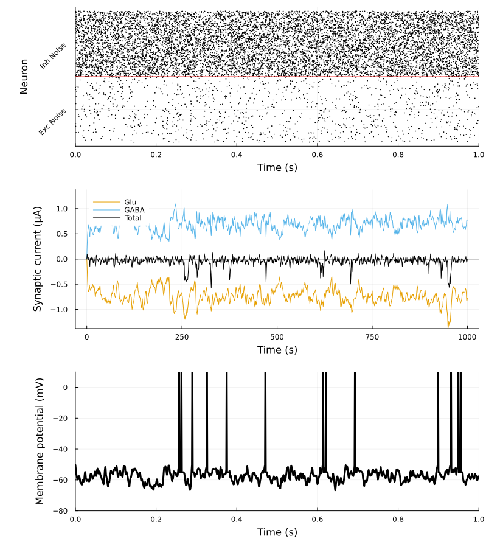
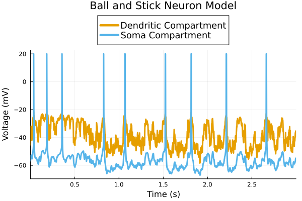
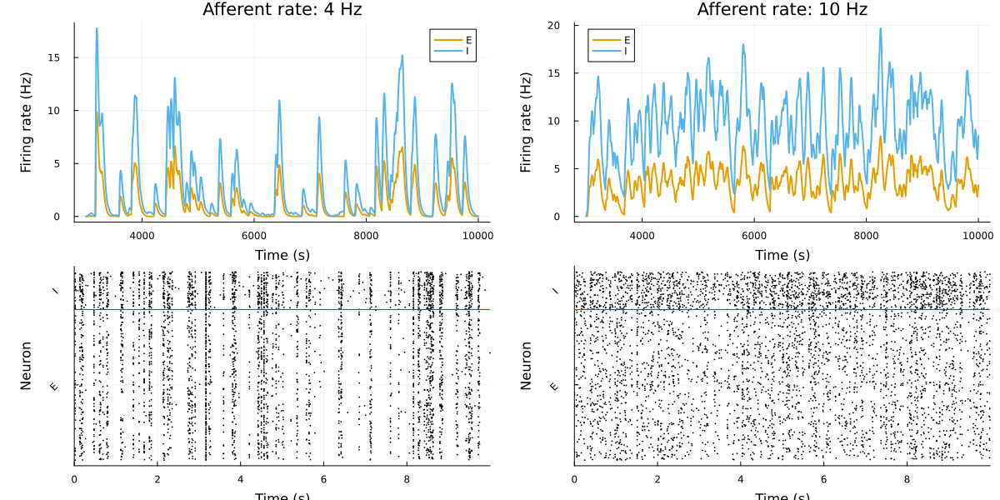
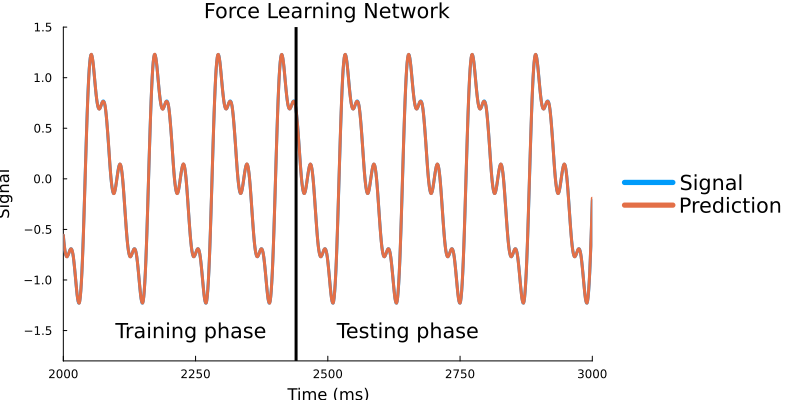

Tutorial
In the following we will guide the user in running models with SpikingNeuralNetworks.jl. The tutorial aims to showcase the basic functionalities of the library, much more can be obtained by composing together the basic building blocks.
The scripts for the tutorials can be found in the examples folder of the package.
We assume the user has the environment manager DrWatson installed.
All scripts assume the following code being loaded. The script are plot with the Plots package in SNNPlots. Future versions will move to Makie.
using DrWatson
findproject(@__DIR__) |> quickactivate
projectdir()
using SpikingNeuralNetworks
using SNNPlots
import SNNPlots: vecplot, plot, Plots
SNN.@load_unitsAdEx neuron
The AdEx model can reproduce several firing patterns observed in real neurons under direct current injections in the soma (AdEx firing patterns, Adaptive exponential integrate-and-fire model as an effective description of neuronal activity). The model has two equations and two variables, one for the membrane and one for the adaptive current:
\[\begin{align} \frac{dV}{dt} &= - \frac{(V - E_l)}{\tau_m} + \Delta T \exp{\frac{V - \theta}{\Delta T}} + R (-w + I - I_{syn}) \\ \\ \frac{dw}{dt} &= \frac{(a (V - E_l) - w)}{\tau_w} \end{align}\]
The AdEx is a concrete type of the AbstractGeneralizedIFParameter (GIF) class. Populations of this type are widely used in biophysical models. JuliaSNN offers extended support for this type, the methods are documented in Generalized Integrate and Fire models
Changing the parameters of the reset voltage, the membrane timescale and current timescales, and the adaptive current parameters we obtain different firing patterns.
using DataFrames
# Define the data
data = [
("Tonic", 20, 0.0, 30.0, 60.0, -55.0, 65),
("Adapting", 20, 0.0, 100.0, 5.0, -55.0, 65),
("Init. burst", 5.0, 0.5, 100.0, 7.0, -51.0, 65),
("Bursting", 5.0, -0.5, 100.0, 7.0, -46.0, 65),
("Transient", 10, 1.0, 100, 10.0, -60.0, 65),
("Delayed", 5.0, -1.0, 100.0, 10.0, -60.0, 25),
]
# Create the DataFrame
df = DataFrame(
Type = [row[1] for row in data],
τm = [row[2] for row in data],
a = [row[3] for row in data],
τw = [row[4] for row in data],
b = [row[5] for row in data],
ur = [row[6] for row in data],
i = [row[7] for row in data],
)
# Display the DataFrame
println(df)
plots = map(eachrow(df)) do row
param = SNN.AdExParameter(
R = 0.5GΩ,
Vt = -50mV,
ΔT = 2mV,
El = -70mV,
# τabs=0,
τm = row.τm * ms,
Vr = row.ur * mV,
a = row.a * nS,
b = row.b * pA,
τw = row.τw * ms,
)
E = SNN.AdEx(; N = 1, param)
SNN.monitor!(E, [:v, :fire, :w], sr = 8kHz)
model = SNN.compose(; E = E, silent = true)
E.I .= Float32(05pA)
SNN.sim!(; model, duration = 30ms)
E.I .= Float32(row.i)
# E.I .= row.i, # Current step
SNN.sim!(; model, duration = 300ms)
Plots.default(color = :black)
p1 = plot(
vecplot(
E,
:v,
add_spikes = true,
ylabel = "Membrane potential (mV)",
ylims = (-80, 10),
),
vecplot(E, :w, ylabel = "Adapt. current (nA)", c = :grey, margin = 10Plots.mm),
plot_title = row.Type,
layout = (1, 2),
legend = false,
size = (600, 800),
topmargin = 1Plots.mm,
)
end
p = plot(
plots...,
layout = (3, 2),
size = (1600, 1000),
xlabel = "Time (ms)",
leftmargin = 10Plots.mm,
)
savefig(p, ASSET_PATH * "/AdEx_neuron_types.png")
# Display the DataFrame| Row | Type | τm | a | τw | b | ur | i |
|---|---|---|---|---|---|---|---|
| 1 | Tonic | 20 | 0.0 | 30.0 | 60.0 | -55.0 | 65 |
| 2 | Adapting | 20 | 0.0 | 100.0 | 5.0 | -55.0 | 65 |
| 3 | Init. burst | 5.0 | 0.5 | 100.0 | 7.0 | -51.0 | 65 |
| 4 | Bursting | 5.0 | -0.5 | 100.0 | 7.0 | -46.0 | 65 |
| 6 | Transient | 10 | 1.0 | 100 | 10.0 | -60.0 | 65 |
| 7 | Delayed | 5.0 | -1.0 | 100.0 | 10.0 | -60.0 | 25 |

Noise input current
In 'in vivo' experiments neurons are driven with noisy inputs that can be modeled by splitting the input current in two components $I = I^{det}(t) + I^{noise}(t)$.
the neuronal dynamics is then determined (for a generalized Leaky and Integrate model) by the equation:
\[\tau_{m} \frac{d u}{ d t} = f(u) + R I^{det}(t) + R I^{noise}(t)\]
In this description the $I^{noise}(t)$ is the stochastic component of the external current, which is normally assumed to be a white noise. Under white noise, the average value of the external current is $\langle I_{noise} \rangle = 0$ and the autocorrelation is determined by the neuronal timescale and the noise variance, $\langle I^{noise}(t) I^{noise}(t') \rangle = \tau_m \sigma \delta (t-t')$.
To introduce white noise in the model we can use the CurrentNoiseParameter type. In the following example:
- define a Leaky Integrate-and-Fire neuron ;
- define a
CurrentNoiseParameter, it accepts a I_base value (the deterministic current) and a distribution, which we set to be a Normal distribution with zero average and100pAvariance; CurrentStimulusattaches an<: AbstraactStimulusto the:Ivariable of the populationE;- record the variables, simulate and plot the results.
using Distributions
SNN.PostSpike()
if_neuron =(
param = SNN.IFParameter(R = 0.5GΩ, Vt = -50mV, ΔT = 2mV, El = -70mV, τm = 20ms, Vr = -55mV),
spike = SNN.PostSpike(),
synapse = SNN.SingleExpSynapse(),
)
# Create the IF neuron with tonic firing parameters
E = SNN.Population(;N = 1, if_neuron...)
SNN.monitor!(E, [:v, :fire, :w, :I], sr = 2kHz)
# Create a withe noise input current
current_param = SNN.CurrentNoise(E.N; I_base = 30pA, I_dist = Normal(00pA, 100pA))
current_stim = SNN.Stimulus(current_param, E, :I)
model = SNN.compose(; E = E, I = current_stim)
SNN.clear_records!(model)
SNN.sim!(; model, duration = 2000ms)
p = plot(
vecplot(
E,
:v,
add_spikes = true,
ylabel = "Membrane potential (mV)",
ylims = (-80, 10),
c = :black,
),
vecplot(E, :I, ylabel = "External current (pA)", c = :gray, lw = 0.4, alpha = 0.6),
layout = (2, 1),
size = (600, 500),
xlabel = "Time (s)",
leftmargin = 10Plots.mm,
)
savefig(
p,
joinpath(ASSET_PATH, "noise_current.png"),
)

Balanced input spikes
In biophysical networks, and in the brain, neurons' membrane potential is not driven by external currents but by the opening and closing of ionic channels following a pre-synaptic spike. Spikes cause the release of neurotransmitter vescicles in the synaptic cleft that bind to the ionic channels on the post-synaptic neuron's membrane. This process is modeled with synaptic models. JuliaSNN offers the classical synaptic models for populations in the GIF family.
The opening of ionic channel can lead to a depolarizing or hyperpolarizing current, dependently on its reversal potential.
In this example we use two spike trains, an excitatory and an inhibitory one, to stimulate a Leaky Integrate-and-Fire neuron above the spike-threshold. The large number of spikes received increases the synaptic conductance of the cell, to the point that it dominates over the leakage conductance term. In this condition, the neurons membrane dynamics is dominated by the external inputs, and the neuron is in the so-called "High-conductance state".
neuron_parameter =(
param = SNN.AdExParameter(
R=0.5GΩ,
Vt = -50mV,
ΔT = 2mV,
El = -70mV,
τm = 20ms,
Vr = -55mV,),
synapse = SNN.DoubleExpSynapse(),
spike = SNN.PostSpike(τabs= 5ms)
)
# Create the IF neuron
E = SNN.Population(;neuron_parameter..., N = 1)
# Create an excitatory and inhibitory spike trains
# Define the Poisson stimulus parameters
poisson_exc = SNN.PoissonLayer(
rate=1Hz, # Mean firing rate (Hz)
N = 1000, # Neurons in the Poisson Layer
)
poisson_inh = SNN.PoissonLayer(
rate = 10Hz, # Mean firing rate (Hz)
N = 1000, # Neurons in the Poisson Layer
)
conn = (
p = 1,
μ = 5nS
)
# Create the Poisson layers for excitatory and inhibitory inputs
stim_exc = SNN.Stimulus(poisson_exc, E, :ge, name = "Exc Noise"; conn)
stim_inh = SNN.Stimulus(poisson_inh, E, :gi, name = "Inh Noise"; conn)
# Create the model and run the simulation
model = SNN.compose(; E = E, stim_exc, stim_inh)
SNN.monitor!(E, [:v, :fire, :w, :ge, :gi], sr = 2kHz)
SNN.monitor!(model.stim, [:fire])
SNN.sim!(; model, duration = 1000ms)
# Plot the results
# gplot is a special function the plots the synaptic currents
Plots.default(palette = :okabe_ito)
p = plot(
SNN.raster(model.stim),
SNN.gplot(
E,
v_sym = :v,
ge_sym = :ge,
gi_sym = :gi,
Ee_rev = 0mV,
Ei_rev = -75mV,
r = 0ms:2.5ms:1000ms,
ylabel = "Synaptic current (μA)",
),
SNN.vecplot(
E,
:v,
add_spikes = true,
ylabel = "Membrane potential (mV)",
ylims = (-80, 10),
c = :black,
),
layout = (3, 1),
fgcolorlegend = :transparent,
size = (800, 900),
xlabel = "Time (s)",
leftmargin = 10Plots.mm,
)

Ball and Stick neuron
We can also implement more complex cellular models. A classical extension of the single-compartment cell, or point-neuron, is the ball-and-stick neuron. This model has a passive dendritic compartment and an active, non-linear soma. In our case, the dendritic compartment can be endowed with synaptic non-linearities, such as the NMDA receptor voltage-dependence. The following example implements a ball and stick model with a steep dendritic non-linearity. The cell is stimulated with balanced excitatory-inhibitory inputs on the denrite.
using SpikingNeuralNetworks
using Plots
using Random
SNN.@load_units
import SpikingNeuralNetworks: Receptors, Receptor, Glutamatergic, GABAergic, DendNeuronParameter, synapsearray, get_time
using BenchmarkTools
Random.seed!(1234)
## Define the neuron model parameters
# Define the synaptic properties for the soma and dendrites
SomaSynapse = Receptors(
AMPA = Receptor(E_rev = 0.0,
τr = 0.26,
τd = 2.0,
g0 = 0.73),
GABAa = Receptor(E_rev = -70.0,
τr = 0.1,
τd = 15.0,
g0 = 0.38)
# SomaSynapse has not NMDA and GABAb receptors,
# they are assigned to a NullReceptor and skipped at simulation time
)
DendSynapse = Receptors(
AMPA = Receptor(E_rev = 0.0, τr = 0.26, τd = 2.0, g0 = 0.73),
NMDA = Receptor(E_rev = 0.0, τr = 8, τd = 35.0, g0 = 1.31, nmda = 1.0f0),
GABAa = Receptor(E_rev = -70.0, τr = 4.8, τd = 29.0, g0 = 0.27),
GABAb = Receptor(E_rev = -90.0, τr = 30, τd = 400.0, g0 = 0.0006),
)
NMDA = let
Mg_mM = 1.0mM
nmda_b = 3.36 # voltage dependence of nmda channels
nmda_k = -0.077 # Eyal 2018
SNN.NMDAVoltageDependency(mg = Mg_mM/mM, b = nmda_b, k = nmda_k)
end
# We then define the dendritic neuron model. The dendritic neuron holds has the soma and dendritic compartments parameters, and the synaptic properties for both compartments.
dend_neuron = DendNeuronParameter(
# adex parameters
C = 281pF,
gl = 40nS,
Vr = -55.6,
El = -70.6,
ΔT = 2,
Vt = -50.4,
a = 4,
b = 80.5pA,
τw = 144,
up = 0.1ms,
τabs = 0.1ms,
# post-spike adaptation
postspike = SNN.PostSpike(A= 10.0, τA= 30.0),
# synaptic properties
soma_syn = SomaSynapse,
dend_syn = DendSynapse,
NMDA = NMDA,
# dendrite
ds = [160um],
physiology = SNN.human_dend,
)
E = SNN.SNNModels.BallAndStick(N=1, param = dend_neuron)
poisson_exc = SNN.PoissonLayerParameter(
10.2Hz, # Mean firing rate (Hz)
p = 1f0, # Probability of connecting to a neuron
μ = 1.0, # Synaptic strength (nS)
N = 1000, # Neurons in the Poisson Layer
)
poisson_inh = SNN.PoissonLayerParameter(
3Hz, # Mean firing rate (Hz)
p = 1f0, # Probability of connecting to a neuron
μ = 4.0, # Synaptic strength (nS)
N = 1000, # Neurons in the Poisson Layer
)
# Create the Poisson layers for excitatory and inhibitory inputs
stim_exc = SNN.PoissonLayer(E, :glu, :d, param=poisson_exc, name="noiseE")
stim_inh = SNN.PoissonLayer(E, :gaba, :d, param=poisson_inh, name="noiseI")
model = SNN.compose(;E, stim_exc, stim_inh)
SNN.monitor!(E, [:v_s, :v_d, :fire, :g_s, :g_d], sr=1000Hz)
#
Plots.default(palette = :okabe_ito)
SNN.sim!(model, 3s)
p = SNN.vecplot(E, :v_d, sym_id=1, interval=1:2ms:get_time(model), neurons=1, label="Dendritic Compartment")
SNN.vecplot!(p, E, :v_s, sym_id=2, interval=1:2ms:get_time(model), neurons=1, add_spikes=true, label="Soma Compartment")
plot!(ylims=:auto, legend=:outertop, legendfontsize=12, xlabel="Time (s)", ylabel="Voltage (mV)", title="Ball and Stick Neuron Model")
Recurrent EI network
using DrWatson
using Plots
using UnPack
using SpikingNeuralNetworks
SNN.@load_units
##
Zerlaut2019_network = (Npop = (E=8000, I=2000),
exc = IFSinExpParameter(
τm = 200pF / 10nS,
El = -70mV,
Vt = -50.0mV,
Vr = -70.0f0mV,
R = 1/10nS,
τabs = 2ms,
τi=5ms,
τe=5ms,
E_i = -80mV,
E_e = 0mV,
),
inh = IFSinExpParameter(
τm = 200pF / 10nS,
El = -70mV,
Vt = -53.0mV,
Vr = -70.0f0mV,
R = 1/10nS,
τabs = 2ms,
τi=5ms,
τe=5ms,
E_i = -80mV,
E_e = 0mV,
),
connections = (
E_to_E = (p = 0.05, μ = 2nS),
E_to_I = (p = 0.05, μ = 2nS),
I_to_E = (p = 0.05, μ = 10nS),
I_to_I = (p = 0.05, μ = 10nS),
),
afferents = (
N = 100,
p = 0.1f0,
rate = 20Hz,
μ = 4.0,
),
)
function network(config)
@unpack afferents, connections, Npop = config
E = IF(N=Npop.E, param=config.exc, name="E")
I = IF(N=Npop.I, param=config.inh, name="I")
AfferentParam = PoissonLayerParameter(afferents.rate; afferents...)
afferentE = PoissonLayer(E, :ge, param=AfferentParam, name="noiseE")
afferentI = PoissonLayer(I, :ge, param=AfferentParam, name="noiseI")
synapses = (
E_to_E = SpikingSynapse(E, E, :ge, p=connections.E_to_E.p, μ=connections.E_to_E.μ, name="E_to_E"),
E_to_I = SpikingSynapse(E, I, :ge, p=connections.E_to_I.p, μ=connections.E_to_I.μ, name="E_to_I"),
I_to_E = SpikingSynapse(I, E, :gi, p=connections.I_to_E.p, μ=connections.I_to_E.μ, name="I_to_E"),
I_to_I = SpikingSynapse(I, I, :gi, p=connections.I_to_I.p, μ=connections.I_to_I.μ, name="I_to_I"),
)
model = compose(;E,I, afferentE, afferentI, synapses..., silent=true, name="Balanced network")
monitor!(model.pop, [:fire])
monitor!(model.stim, [:fire])
# monitor!(model.pop, [:v], sr=200Hz)
return compose(;model..., silent=true)
end
##
plots = map([4, 10]) do input_rate
config = @update Zerlaut2019_network begin
afferents.rate = input_rate*Hz
end
model = network(config)
sim!(;model, duration=10_000ms, pbar=true)
pr= raster(model.pop, every=40)
# Firing rate of the network with a fixed afferent rate
frE, r = firing_rate(model.pop.E, interval=3s:10s, pop_average=true)
frI, r = firing_rate(model.pop.I, interval=3s:10s, pop_average=true)
pf = plot(r, [frE, frI], labels=["E" "I"],
xlabel="Time (s)", ylabel="Firing rate (Hz)",
title="Afferent rate: $input_rate Hz",
size=(600, 400), lw=2)
# Plot the raster plot of the network
plot(pf, pr, layout=(2, 1))
end
plot(plots..., layout=(1,2), size=(1200, 600), xlabel="Time (s)", leftmargin=10Plots.mm)
##
FORCE learning
An example of a rate-based spiking neural network (SNN) that implements the force learning algorithm described "Generating Coherent Patterns of Activity from Chaotic Neural Networks" by D. Sussillo and L.F. Abbott (2009). The network consists of a 200 rate units with force learning synapses. The network is trained on a sinusoidal input signal for a certain duration, and then tested on the same signal. The plot shows the input signal and the network's prediction.
using SpikingNeuralNetworks
SNN.@load_units
using Plots
S = SNN.Rate(; N = 200)
SS = SNN.FLSynapse(S, S; μ = 1.5, p = 1.0)
model = SNN.compose(; S, SS)
SNN.monitor!(SS, [:f, :z], sr = 1000Hz)
A = 1.3 / 1.5;
fr = 1 / 60ms;
f(t) =
(A / 1.0) * sin(1π * fr * t) +
(A / 2.0) * sin(2π * fr * t) +
(A / 6.0) * sin(3π * fr * t) +
(A / 3.0) * sin(4π * fr * t)
for t = 0:0.125ms:2440ms
SS.f = f(t)
SNN.train!(; model, duration = 0.125f0)
end
for t = 2440ms:0.125ms:3500ms
SS.f = f(t)
SNN.sim!(; model, duration = 0.125f0)
end
#
p = plot([SNN.getrecord(SS, :f) SNN.getrecord(SS, :z)], label = ["Signal" "Prediction"], lw = 3);
plot!(p, xlabel = "Time (ms)", ylabel = "Signal", title = "Force Learning Network",
legend = :outerright, size = (800, 400), grid = false, ylims = (-1.8, 1.5), xlims =(2000, 3000),
fg_legend=:transparent, legendfontsize=14)
annotate!(p, [(2240ms, -1.5, "Training phase")], textsize = 10, color = :black)
annotate!(p, [(2650ms, -1.5, "Testing phase")], textsize = 10, color = :black)
SS.records
SS.records[:f]
vline!([2440ms], color = :black, label = "", lw=3)